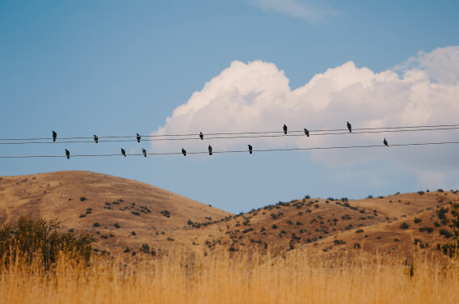
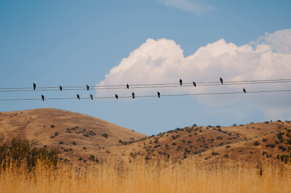
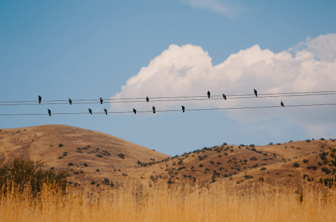

An epic bicycle journey from Portland, ME. to Portland, OR
YOUR JOURNEY STARTS HERE
Know the country you live in a little better
That's exactly what we have arranged for you via this travel story
Need more action and adventure in your life instead of the same old routine? From Portland, Maine to
Portland, Oregon we're going to take you on an exciting journey through some unknown regions of your
country. Leave the car at home and travel by bike starting in New England where it all began. You will
pass
through 12 beautiful states, covering a total of 3,600 miles, and accomplish 3 monumental missions.
Partying
and taking a selfie with a famous rock star, donating $1 to a billionaire to help eradicate polio in
Africa,
and even stopping by famous author Stephen King's house to say hi and asking him to sign your
favorite
book.
Distance (miles) 3,644
time (days) 22
Highest point (feet) 9,613
Lowest point (feet) -3

Maine
Still, as sparsely populated as it was in the 1600s, this is an
extraordinary and highly
underrated state full of rich history and majestic natural beauty. Maine is the main state
you want
to be sure not to miss. As your journey is going to be a long one, you had best be prepared for
an arduous trek. Thankfully, not only is Maine home to the very first European settlers on
US
territory in the era of Vikings , but is also home to L.L. Bean, which is a great company to
grab a
super sturdy backpack from for your 3-month expedition. Average cost: $80-100.
New Hampshire
There's no better place to lose yourself in nature than in springtime
New
Hampshire. As
serene and beautiful as it was in the 1700s, this state is still much less traveled than its
neighbors to the South. So enjoy it while it lasts. You won't be on your bike the whole time, so
doesn't it make sense to pick up some extra footwear?
Fortunately for you, the best outdoor shoe company in the history of the world proudly hails
from
this state. Cycle by the Timberland headquarters in Stratham, and pick up a pair of rugged,
waterproof boots to keep your feet dry. Fitting for unpredictable weather you may be
confronted by
while passing through the Appalachians. These boots are also better than cycling shoes when
pitching
a tent. Average cost: $100-150.
New York
Not only famous for “The Big Apple,” the state of NY also has several
other
reasons for
going down in history. Since the late 1800s Schenectady, “The City that Lights and Hauls the
World,”
has been home to the world- famous General Electric Company. This is where modern power
generators
were born as well as contemporary means of transmitting energy. So we figured this would be
the
perfect place to find a batteryless dynamo light for your bicycle to help you see through
those dark
lonely roads on your adventure. Such a light from GE will set you back about $10-20.
Erie, PA
Erie, Pennsylvania, not to be confused with the word “eerie,” although
it
can be from time
to time, is another town worth passing through for several different reasons. While it might
be most
famously known as the scene of the Gettysburg address delivered by Mr. Lincoln during the
Civil war,
Pennsylvania also has produced a rather decent-sized Amish community (eerie, huh?) The
reason
we've brought you here today, if you haven't already guessed, can be summed up by using
one delicious word: chocolate. Hershey's is a Pennsylvania -based company. Most likely, one
of the
tastiest missions you'll ever embark on during this tour, try to find an Amish friend and
enjoy a
bar in the National Wildlife Refuge on your way to Erie and have an extra eerie time! The
current
cost of a Hershey's Chocolate bar: about 60¢.
Ohio
From the college capital of Columbus to the clean coastline of
Cleveland,
Ohio is a truly
hidden gem . Earthquakes are surprisingly common in this particular region of North America,
over 200
of which have registered with a magnitude of 2 or higher since 1776 . However, earthquakes
aren't
the
only thing shaking this centrally located state. One of the country's largest and oldest
roller
coaster parks is waiting to ROCK your world in Sandusky, Ohio! This will presumably be one of
the
most thrilling quests you'll ever complete (provided you can stomach it). Take a much-deserved
break
to ride as many roller coasters as you can before continue your bike ride. The cost of a
daily
ticket: about $100.
Historic Route 66
The Main Street of America from Santa Monica, Cal, to Chicago, III swithin an iframe


 
